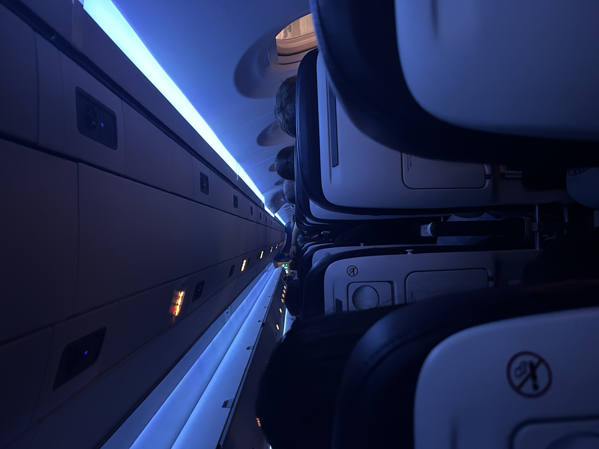
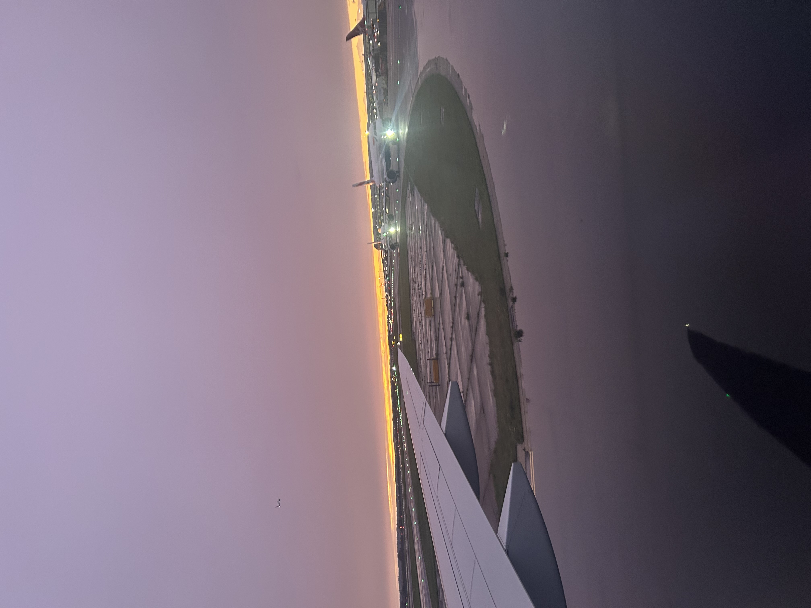
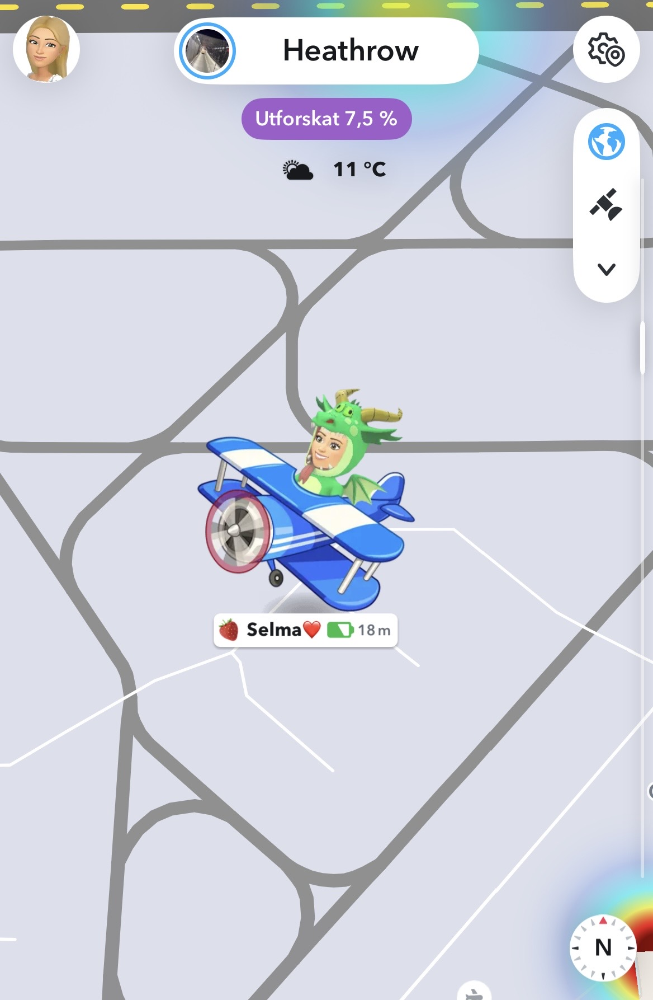
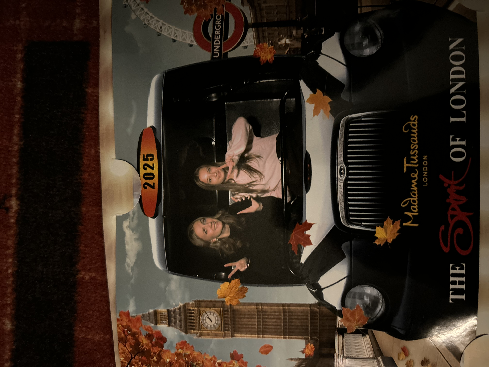
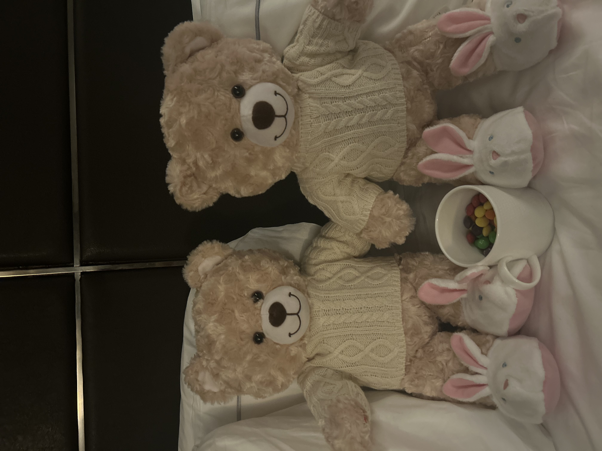
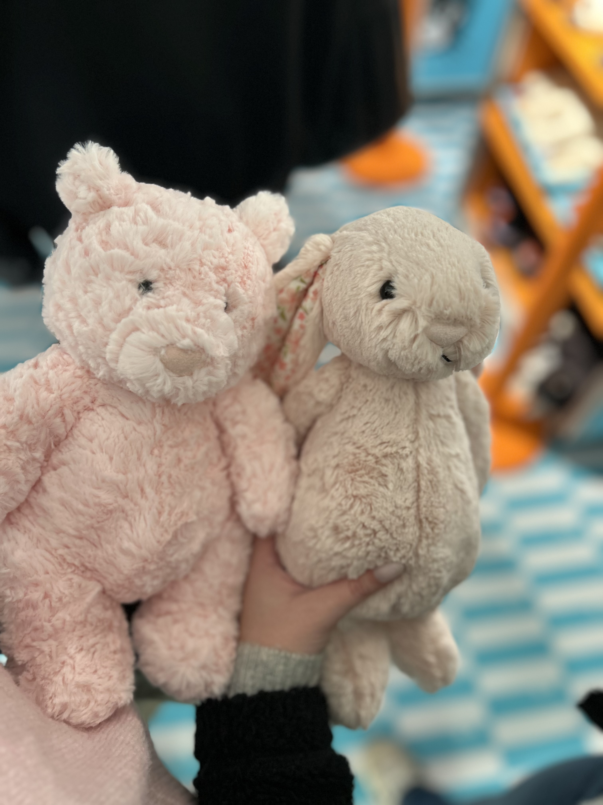

Bästa resan med min Sköna Böna
Många fina minnen för livet
_____________________________________________
Vi börjar med resan dit!✈️➡︎🇬🇧
När jag och Selma åkte till London började vår resa med att vi flög från Landvetter. Vi mellanlandade i Nederländerna, där vi bara hade ungefär 15 minuter på oss att gå av flyget och hitta vårt nästa flyg. Det blev lite stressigt, men vi hann och kunde sedan flyga vidare mot London. När vi hade landat i London började vi leta efter tunnelbanan. Vi hittade till slut rätt och åkte tunnelbana i ungefär en timme innan vi kom fram till Westminster. Där låg vårt hotell, Park Plaza Westminster Bridge. När vi gick upp från tunnelbanestationen var det första vi såg Big Ben, och det kändes verkligen som att vi hade kommit till London på riktigt. Vi gick över bron och där låg hotellet precis framför oss.



Aktiviteter och underhåll
Madame Tussauds: Vi såg massor av vaxdockor av kändisar. Vi åkte också en slags berg- och dalbana genom museet där vi fick se olika berättelser. Vi åkte i taxivagnar och blev fotograferade. Vi såg även en 4D-film med glasögon, rörliga stolar och ånga som gjorde upplevelsen mer verklig. Build-A-Bear: Vi fick välja varsin nalle som fylldes med bomull. Vi lade även in våra inspelade röster, valde kläder och döpte nallarna. Camden Market: Vi gick runt på den stora marknaden och kollade i olika butiker och stånd. Det fanns mycket mat och många olika saker att köpa. Tower Bridge: Vi åkte och kollade på den kända Tower Bridge och tog bilder. Big Ben: Vi såg Big Ben flera gånger och gick runt i området vid Westminster. Jellycats: Vi köpte varsin jellycat gossedjur på jellycat butiken.



Mat och dryck
Mat: Vi åt olika sorters mat under resan och testade även några saker som är populära i London. Det fanns många olika restauranger och maträtter att välja mellan. Frukost: På hotellet åt vi frukost på morgonen. Det fanns mycket olika saker att välja mellan, så vi kunde ta det vi tyckte om. Fika och snacks: Under dagarna köpte vi även fika och olika snacks när vi gick runt i London. Dryck: Vi köpte olika drycker under resan och testade bland annat saker som vi inte brukar köpa hemma. Mat i Camden Market: På Camden Market fanns det massor av olika maträtter från olika delar av världen. Det var roligt att gå runt och kolla på alla olika alternativ.
Shopping
Vi gick runt i olika butiker och shoppade. Det fanns många olika affärer och vi hittade saker som vi ville köpa. Vi köpte bland annat kläder, smycken och souvenirer. På camden market fanns det också många olika saker att köpa, som handgjorda smycken och kläder. Det var en affär vi var inne i där vi fick välja berlocker själva till en egen vald armbands kedja. Vi hade en rolig shoppingupplevelse och hittade många fina saker att ta med hem.
Avslutning
Vi hade en fantastisk resa till London och skapade många fina minnen tillsammans. Vi fick uppleva olika aktiviteter, smaka på ny mat och dryck, shoppa och se kända sevärdheter. Det var en resa som vi sent kommer glömma och vi ser fram emot fler äventyr tillsammans i framtiden.